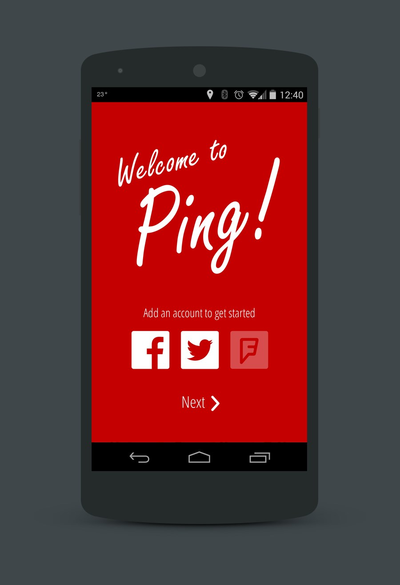
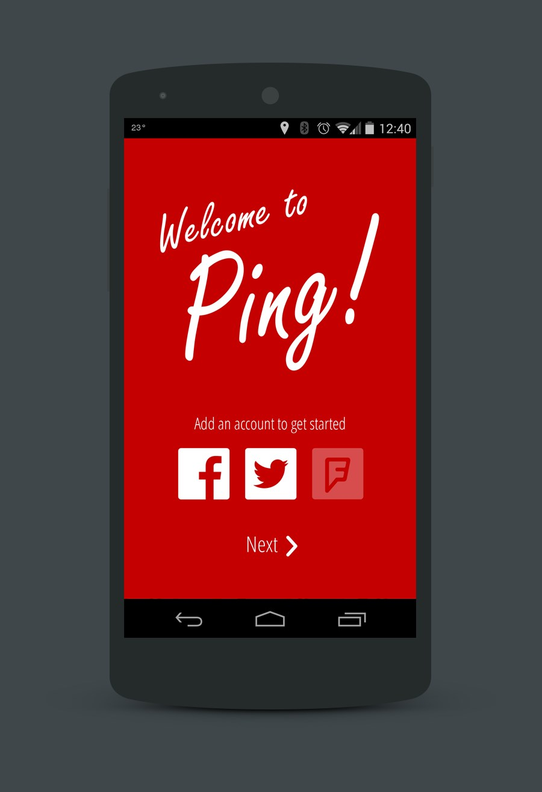

Ping App
When going on a trip, friends and loved ones will often like to keep tabs on one's progress, particularly if travelling alone. Inspired by my friend's solo motorcycle trip across North America, the goal of the Ping app is to provide a means for users to easily inform their friends and loved ones of their whereabouts through social media.
Issues Addressed
- Friends and loved ones want to keep tabs on a user's progress on a trip
- It can be easy to forget to, and sometimes inconvenient, to manually check-in on social media to report one's progress
- Travelling through low cellular reception areas can make it difficult to check-in via a data connection
Approach
- The Ping app provides an easy means to send updates to social media (i.e. Facebook, Twitter)
- Easy, single tap experience to manually report a user's location
- Ability to setup automatic timed posts to social media, reporting the user's position
- In areas where cellular reception is too low for a data connection, use SMS under the covers to report the user's position

 

{kind=link}
{kind=link}
{kind=link}